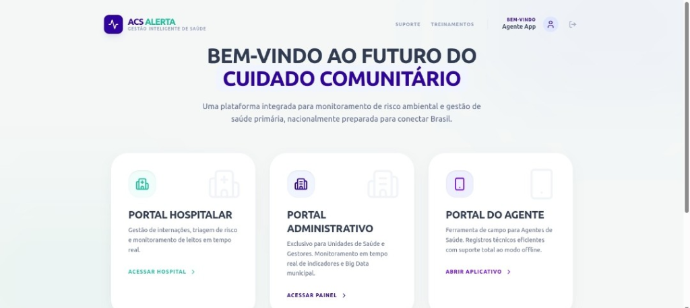

Beberibe na vanguarda da Saúde Digital
Uma solução integrada de alta performance conectando os Agentes de Saúde (ACS Alerta), as Unidades Básicas de Saúde (Agente Ativo/UBS) e a Média e Alta Complexidade (Hospital SAAS) em tempo real.
Exma. Sra. Prefeita Michele Queiroz
Secretaria Municipal de Saúde de Beberibe - CE

Prontuário Único Integrado Municipal
O grande diferencial tecnológico da nossa proposta: a Interoperabilidade Vertical Total da saúde de Beberibe.
Interoperabilidade Vertical
Os dados inseridos pelas visitas de campo dos agentes de saúde (ACS) alimentam instantaneamente o Prontuário Eletrônico da UBS, que por sua vez está conectado diretamente ao Hospital Municipal.
Fim da Duplicidade de Exames
Exames laboratoriais e de imagem realizados no Hospital Municipal ficam disponíveis imediatamente no prontuário para os médicos das UBSs de Beberibe, evitando custos desnecessários e retrabalho.
Alerta de Pós-Alta Hospitalar
No momento em que o paciente recebe alta do hospital, um alerta automático é disparado para a equipe de Saúde da Família (eSF) responsável pelo seu território, agilizando o acompanhamento domiciliar preventivo.
Escopo dos Módulos Inclusos
Tecnologia especializada cobrindo todas as frentes de atendimento e gestão do município.
Portal do Agente (ACS Alerta)
- Substituição completa das antigas fichas físicas de papel por aplicativo móvel ágil.
- Suporte offline total para trabalho de campo em distritos e praias de Beberibe (como Morro Branco, Praia das Fontes, Sucatinga, Parajuru, Serra do Félix e Itapeim).
- Roteirização inteligente e alertas automáticos de busca ativa (vacinas, gestantes, crônicos).
- Validação cadastral avançada na ponta (validação automática de CPF e Cartão SUS).
Portal Administrativo (Agente Ativo & UBS)
- BI e dashboards dinâmicos com monitoramento dos 7 indicadores federais do Previne Brasil.
- Mapeamento inteligente de territórios, microáreas e áreas de vulnerabilidade social.
- Sincronização em tempo real e envio automatizado de fichas ao e-SUS e à RNDS.
- Acompanhamento quadrimestral das metas do Indicador Sintético Final (ISF).
Portal Hospitalar (Hospital SAAS)
- Recepção digital com emissão de senhas e triagem rápida de urgência (Protocolo de Manchester).
- Prontuário clínico eletrônico de urgência/emergência e prescrição digital de medicamentos.
- Gestão operacional de leitos e internações em tempo real por painel de controle central.
- Ouvidoria ativa, Serviço Social e farmácia hospitalar totalmente integrada ao estoque REMUME.
Planos e Investimentos
Duas opções de contratação flexíveis de acordo com a abrangência tecnológica desejada pela Prefeitura.
Plano Standard
Foco exclusivo na informatização e otimização da Atenção Primária.
- Portal do Agente (ACS Alerta completo)
- Portal Administrativo (UBS e gestão unificada)
- Dashboards do Previne Brasil (Monitoramento de metas)
- Infraestrutura em nuvem integrada (Banco de dados MySQL)
- Suporte técnico especializado por e-mail e canal corporativo
Plano Plus
A cobertura tecnológica mais completa para toda a rede unificada municipal.
- Tudo do Plano Standard incluso
- Portal Hospitalar Completo (Hospital SAAS)
- Prontuário Único Integrado Municipal (Integração total)
- Classificação de Risco & Triagem de Manchester
- Gestão de Internações e Controle Operacional de Leitos
- Farmácia Hospitalar e Almoxarifado Integrados
- Ouvidoria, Serviço Social e regulação interna de filas
- Prioridade em suporte 24/7 e atualizações contínuas
Cronograma de Implantação
Uma transição ágil, profissional e acompanhada em até 60 dias para o go-live completo.
Estruturação & Setup de Nuvem
Montagem da infraestrutura em nuvem segura, criação e validação do banco de dados MySQL corporativo, cadastramento inicial de unidades de saúde, equipes e usuários administradores.
Porta de Entrada e Recepção
Configuração inicial de senhas, ativação da classificação de risco (Manchester), e treinamento intensivo prático com recepcionistas, triadores e equipe de acolhimento hospitalar.
Treinamento Clínico & Farmácia
Capacitação do corpo clínico (médicos e enfermeiros) para uso do prontuário médico eletrônico, emissão de receitas digitais e treinamento prático de dispensação de remédios e controle de estoque.
Operação Assistida Go-Live
Entrada oficial em produção monitorada com técnicos acompanhando presencialmente na recepção, enfermagem, consultórios e farmácia para suporte rápido aos profissionais.
Especificações Técnicas & Segurança
Arquitetura robusta planejada para garantir estabilidade operacional e proteção total de dados municipais.
Banco de Dados MySQL
Hospedagem em servidores cloud de alta performance, garantindo redundância, backup diário e queries de alta velocidade.
Segurança de Tráfego
Criptografia SSL/HTTPS aplicada em todas as conexões, impossibilitando a interceptação de informações confidenciais.
LGPD Compliant
Adequação integral às normas da Lei Geral de Proteção de Dados, com trilha de auditoria completa e proteção a prontuários.
Design Ergonômico
Interface com tonalidades de coral e turquesa especialmente pensada e balanceada para prevenir o cansaço visual em longos turnos.
Pronto para liderar a inovação na saúde?
Entre em contato para agendar uma demonstração detalhada ou a assinatura do contrato.
Francinaldo Pacífico Bezerra
Desenvolvedor e Empreendedor de Soluções em Saúde Pública